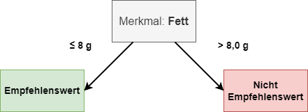
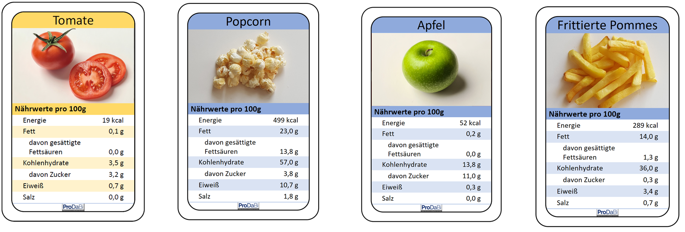
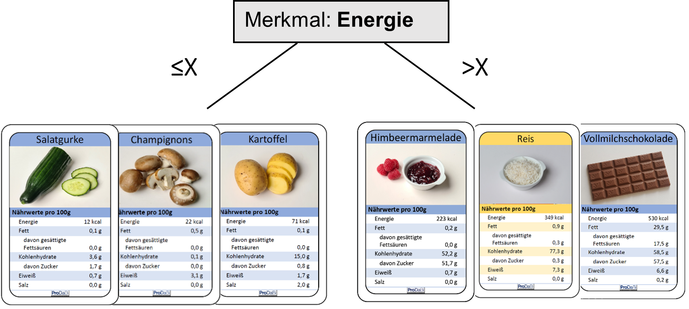
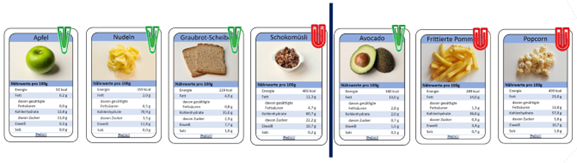
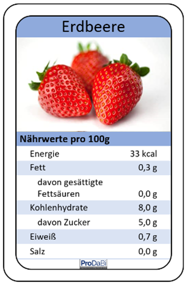
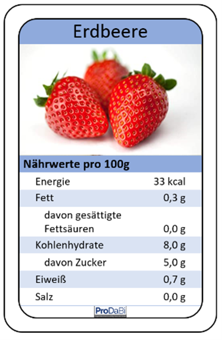

- Ein wichtiger Bestandteil von Intelligenz laut Wikipedia ist
- Probleme lösen
- Probleme erfinden
- Probleme erraten
- Probleme aufschieben
- Wähle ein Merkmal aus was Bild 1 eindeutig identifiziert und von Bild 2 und Bild 3 maßgeblich unterscheidet
- Lebensraum, Hintergrund
- Füße, Bauch
- Schnabel, Kopf
- Federn, Augen Zähne
- Valeria "labelt" verschiedene Tierbilder. Welche Tätigkeit übt sie dabei aus
- Dem Bild werden verschiedene eindeutige Merkmale zugeordnet z.B. Fell ist regenbogen farbig, schwarze Flossen
- Die Bilder werden beschriftet mit dem Inhalt der zu sehen ist z.B. Affe, Hase, Storch
- Die Bilder werden in Computersprache aufgeschlüsselt und jedes Pixel erhält einen numerischen Wert
- Valeria versucht Tier ezu zeichnen die dem gezeigten Tier entsprechen. Dann gibt sie ihre Zeichnungen in eine Datenbank
- Ein Algorithmus ist
- eine mathematische Gleichung, die niemals gelöst werden kann
- ein künstliches Wesen, das Computerprogramme entwickelt
- eine geheime Sprache für Computer
- eine eindeutige Schrittfolge an Anweisungen
- Kein Beispiel für ein Algorithmus ist:
- Ein nummeriertes Kochrezept mit einer Zutatenliste
- Bauanleitung mit einer Schrittfolge und Bildern
- kreatives Schreiben von Gedichten
- Computerprogramm für das Spiel Schere-Stein-Papier
- Ein KI Programm kann Tiere in Bildern erkennen. Bei dem linken Bild wurde richtig der Schäferhund erkannt. Bei dem rechten Bild ist das Programm unsicher und kann nur mit 18.25% sagen, dass sich hier eine Hauskatze befindet. Gib einen möglichen Grund dafür an
- Das Programm wurde trainiert nur ein Tier zu erkennen, bei zwei Tieren, weis es nicht, welches es deuten soll
- Das Programm wurde trainiert Hintergründe mit einzubeziehen. Ein Schäferhund auf der Wiese funktioniert, eine Hauskatze vor weißem Hintergrund nicht
- Das Programm wurde so trainiert, das nur Bilder von der Seite erkannt werden, ein Frontalbild kennt es nicht
- Die Fellfarbe der Hauskatze ist sehrunüblich und passt nicht zu den Bildern aus denen gelernt wurde
- Ein Computer sieht ein Bild als
- chemiische und lektrishce Reaktion
- Eine Reihe von Zahlen die die Postion der Objekte im Bild beschreibt
- Abfolge von Tönen und Geräuschen
- Ansammlung von Pixel welche einen numerischen Wert haben


- Es wurde folgende Entscheidungsregel aufgestellt.
 - Eine Tomate wird als empfehlenswert klassifiziert, denn 0,1 g ≤ 8,0 g
- Popcorn wird als nicht empfehlenswert klassifiziert, denn 23,0 g > 8,0 g
- Eine Apfel wird als empfehlenswert klassifiziert, denn 0,2 g ≤ 8,0 g
- Frittierte Pommes wird als nicht empfehlenswert klassifiziert, denn 14,0 g > 8,0 g
- Wähle für die Entscheidungsregel einen Schwellenwert zum Merkmal Energie, der zur Aufteilung der Karten passt. Trage den Schwellenwert für X und Y richtig ein

- X: 147(+-76)
- Eine Klasse bei der Einteilung der Lebensmittel aus der letzten Stund war beispielsweise:
- Kartoffel
- Energie
- 260 kcal
- Empfehlenswert
- Welche Aussage lässt sich über die Klassifizierung mit dem angegeben Merkmal aussagen
- Die Klassifizierung nur nach dem Merkmal Kohlenhydrate ist für die ausgewählten Merkmale ungeeignet
- Der Datensatz wurde falsch klassifiziert
- Der Schwellenwert ist schlecht gewählt
- Es wurde ein Fehler beim labeln gemacht
- In welchen dieser Bereiche wird KI nicht oder nur sehr geringfühgig eingesetzt
- Gesundheitswesen
- Landwirtschaft
- Militär
- Gastronomie

- Welche der folgenden Aussagen beschreibt am besten den Prozess der Klassifikation eines Datensatzes?
- Die Umwandlung von Bildern in Text mithilfe von neuronalen Netzen.
- Die Sortierung von Daten in einer Excel-Tabelle.
- Die Zuordnung von Merkmalen zu verschiedenen Klassen basierend auf vordefinierten Regeln.
- Die Analyse von Wetterdaten zur Vorhersage von Erdbeben.
- Welche Aussage beschreibt am besten die Trenngerade in einer Klassifikation?
- Die Trenngerade ist eine gerade Linie, die den Datensatz in zwei Klassen teilt.
- Die Trenngerade ist ein Werkzeug zur Berechnung des Durchschnitts der Datenpunkte.
- Die Trenngerade ist eine Kurve, die den Datensatz in mehrere Klassen unterteilt.
- Die Trenngerade ist ein Konzept, das nur in der Spracherkennung verwendet wird.
- Es sei folgende Klassfikation von gelabelten Daten gegeben. Links der Trenngerade sollen grüne Lebensmittel und rechts rote Lebensmittel klassifiziert werden. Wie viele Fehler hat die Klassifikation 
- 0
- 1
- 2
- 3
- Eine Lineare Funktion lässt sich immer aus zwei beliebigen Punkten erzeugen, sofern die Puntke einen unterschiedlichen x-Wert besitzen.
- WAHR
- FALSCH
- Der Punkt P(1/0) liegt auf der Funktion f(x)= 2x - 2
- WAHR
- FALSCH
- Welche der folgenden Aussagen beschreibt am besten einen Vorteil von mehrstufigen Entscheidungsbäumen gegenüber einstufigen?
- Mehrstufige Entscheidungsbäume benötigen weniger Trainingsdaten.
- Mehrstufige Entscheidungsbäume sind einfacher zu interpretieren
- Mehrstufige Entscheidungsbäume sind schneller in der Berechnung.
- Mehrstufige Entscheidungsbäume können komplexere Zusammenhänge erfassen.
- Es sei ein Entscheidungsbaum und ein zu klassifizierender Datensatz gegeben. Wird das Lebensmittel richtig oder falsch klassifiziert?
- RICHTIG
- FALSCH
- Welche der folgenden Aussagen beschreibt am besten Overfitting?
- Overfitting tritt auf, wenn ein Modell zu stark vereinfacht wird und die Trainingsdaten nicht gut genug passen.
- Overfitting tritt auf, wenn ein Modell zu komplex wird und die Trainingsdaten zu genau abbildet, sodass es auf neuen Daten schlecht generalisiert.
- Overfitting tritt auf, wenn ein Modell zu schnell trainiert wird und die Trainingsdaten nicht ausreichend verarbeitet.
- Overfitting tritt auf, wenn ein Modell zu wenig Merkmale verwendet und dadurch die Trainingsdaten nicht ausreichend berücksichtigt.
- Welche der folgenden Aussagen beschreibt am besten das Konzept von Early Stopping?
- Early Stopping ist ein Verfahren zur Beschleunigung des Trainingsprozesses von neuronalen Netzen.
- arly Stopping ist ein Ansatz zur Verhinderung von Overfitting, bei dem das Training eines Modells beendet wird, wenn die Leistung auf einem Validierungsdatensatz nicht mehr verbessert wird.
- Early Stopping ist eine Methode zur Steigerung der Komplexität eines Modells, um die Genauigkeit zu erhöhen.
- Early Stopping ist eine Technik, bei der das Training eines Modells erst nach einer bestimmten Zeit beginnt.

- Hier siehst Du einen Entscheidungsbaum, der mit dem Computer erstellt wurde und eine neue Lebensmittelkarte.
- empfehlenswert
- nicht empfehlenswert Vervollständige den Satz:
- Erkläre den Begriff Daten und ihren Zweck
- 11. In welcher Reihenfolge erstellt man eine Entscheidungsregel mit Hilfe von Daten? Nummeriere in der richtigen Reihenfolge von 1 bis 3.
- 1 Ich wähle ein Merkmal aus
- 3 Ich finde einen guten Schwellenwert, bei dem viele Karten klassifiziert werden
- 2 Ich ordne die Daten dem ausgewählten Merkmal der Größe nach
- Welche der folgenden Optionen beschreibt am besten einen Schwellenwert in der Kontext von Klassifikationsmodellen?
- Ein Wert, der angibt, wie viele Datenpunkte in einem Datensatz vorhanden sind.
- Ein Wert, der den durchschnittlichen Abstand zwischen den Datenpunkten angibt.
- Ein Wert, der verwendet wird, um zu entscheiden, welche Klasse einem Datenpunkt zugeordnet wird.
- Ein Wert, der angibt, wie genau ein Modell auf einem Trainingsdatensatz performt.
- Was sit die Hauptfunktionen des Axons
- Die Produktion von Neurotransmittern
- Die Weiterleitung von elektrischen Signalen über große Distanzen
- Die Speicherung von genetischem Material
- Die Aufnahme von Nährstoffen aus der Umgebung
- Welche der folgenden Aussagen beschreibt am besten das "Alles-oder-Nichts-Gesetz" in Bezug auf Neuronen?
- Neuronen können entweder elektrische oder chemische Signale übertragen.
- Neuronen feuern immer mit derselben Intensität, unabhängig von der Stärke des Reizes.
- Neuronen feuern nur dann ein Aktionspotential, wenn der Reiz einen bestimmten Schwellenwert überschreitet.
- Neuronen können nur entweder positive oder negative Signale senden.
- Welche der folgenden Aussagen beschreibt am besten die Funktion von Gewichten in Neuronen im Kontext künstlicher Intelligenz?
- Gewichte sind die Anzahl der Neuronen in einem neuronalen Netzwerk
- Gewichte sind zufällig generierte Parameter, die die Leistung eines neuronalen Netzwerks verbessern
- Gewichte sind biologische Marker, die die Aktivität von Neuronen im Gehirn messen.
- Gewichte sind numerische Werte, die die Stärke der Verbindungen zwischen Neuronen darstellen und die Gewichtung bestimmter Eingabemerkmale für die Ausgabe des neuronalen Netzwerks beeinflussen.
- Bei einem Neuron hat das Merkmal x_1 ein Gewicht von 0,9. Die Merkmale x_2 bis x_10 haben ein Gewicht von 0,01. Welche Aussage trifft am meisten zu
- Merkmal x_1 hat eine gleiche Bedeutung wie Merkmal x_2 bis x_10 zusammen
- Merkmal x_1 hat eine kleinere Bedeutung wie Merkmal x_2 bis x_10 zusammen
- Merkmal x_1 hat eine größere Bedeutung wie Merkmal x_2 bis x_10 zusammen
- Die Bedeutung lässt eines Merkmals lässt sich nicht an Gewichten bestimmen
 
Entscheide mit Hilfe des Entscheidungsbaums, ob Erdbeeren eher empfehlenswert oder eher nicht empfehlenswert sind.

Entscheide mit Hilfe des Entscheidungsbaums, ob Erdbeeren eher empfehlenswert oder eher nicht empfehlenswert sind.
Die Erdbeere wird als ... klassifiziert, weil ...